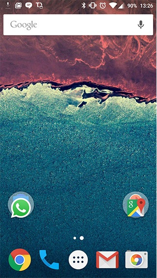

Android
Android es un sistema operativo basado en el núcleo Linux. Fue diseñado principalmente para dispositivos móviles con pantalla táctil, como teléfonos inteligentes, tablets o tabléfonos; y también para relojes inteligentes, televisores y automóviles. Inicialmente fue desarrollado por Android Inc., empresa que Google respaldó económicamente y más tarde, en 2005, la compró. Android fue presentado en 2007 junto la fundación del Open Handset Alliance (un consorcio de compañías de hardware, software y telecomunicaciones) para avanzar en los estándares abiertos de los dispositivos móviles.10 El primer móvil con el sistema operativo Android fue el HTC Dream y se vendió en octubre de 2008.11 Los dispositivos de Android venden más que las ventas combinadas de Windows Phone e IOS.
Windows Phone

Windows Phone (abreviado WP) es un sistema operativo móvil desarrollado por Microsoft, como sucesor de Windows Mobile. A diferencia de su predecesor está enfocado en el mercado de consumo en lugar de en el mercado empresarial. Con Windows Phone; Microsoft ofrece una nueva interfaz de usuario que integra varios de sus servicios propios como OneDrive, Skype y Xbox Live en el sistema operativo. Compite directamente contra Android de Google e iOS de Apple. Su última versión disponible y definitiva es Windows Phone 8.1, lanzado el 14 de abril de 2014.